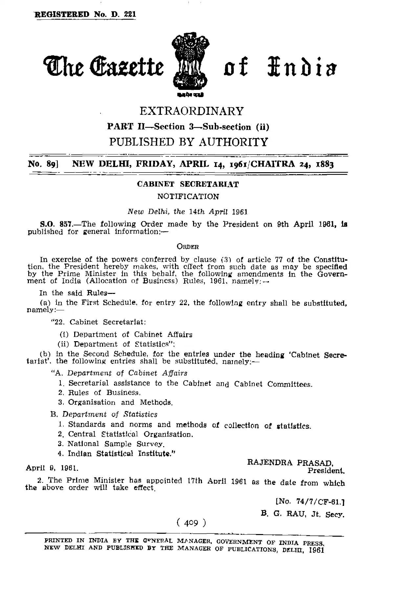

Amendment #1 (S.O. 857, 1961)
2 changes: 1 to the First Schedule, 1 to the Second Schedule. 2 applied
The order, page by page
Page 1 of 2

12Schedule 1 › entry 22
- 22. Cabinet Secretarlat:
- i. Department of Cabinet Affairs
- ii. Department of Statistics
applied at schedule 1 › department 22 in the Rules after #1
read hindi missing
Schedule 2 › Cabinet Secre- tariat
- A. Department of Cabinet Affairs
- 1. Secretarial assistance to the Cabinet and Cabinet Committees.
- 2. Rules of Business
- 3. Organisation and Methods.
- B. Department of Statistics
- 1. Standards and norms and methods of collection of statistics.
and 3 more
- 2. Central Statistical Organisation.
- 3. National Sample Survey.
- 4. Indian Statistical Institute.
applied at schedule 2 › ministry CABINET SECRETARIAT in the Rules after #1
read hindi missing
Page 2 of 2
How this document was read
Edits to the reading
| Date | By | Edit | Before → after |
|---|---|---|---|
| 12 November 2026 | claude | word corrected |
From the Government of India (Allocation of Business) Rules, 1961 and their amendments, as published by the Cabinet Secretariat (cabsec.gov.in), read by orgpedia. The readings of the older scanned gazettes have known gaps.